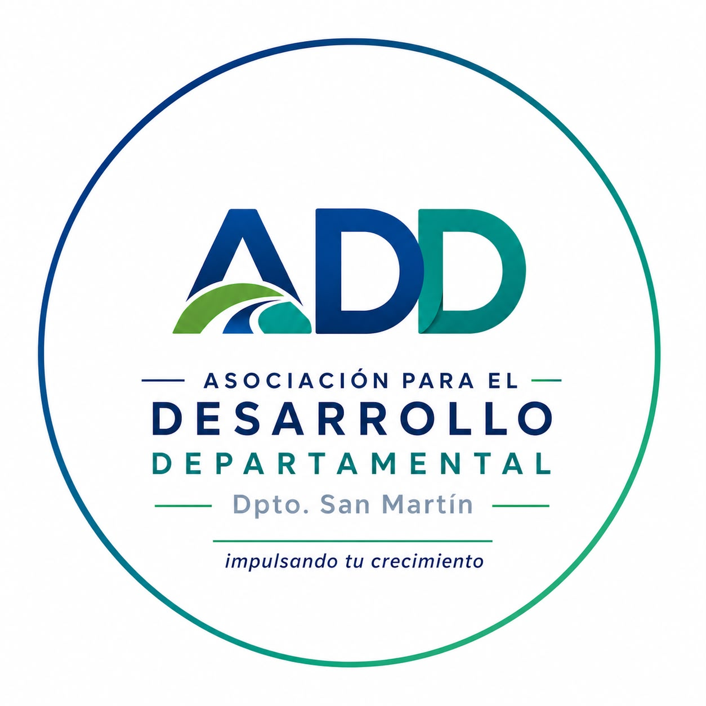
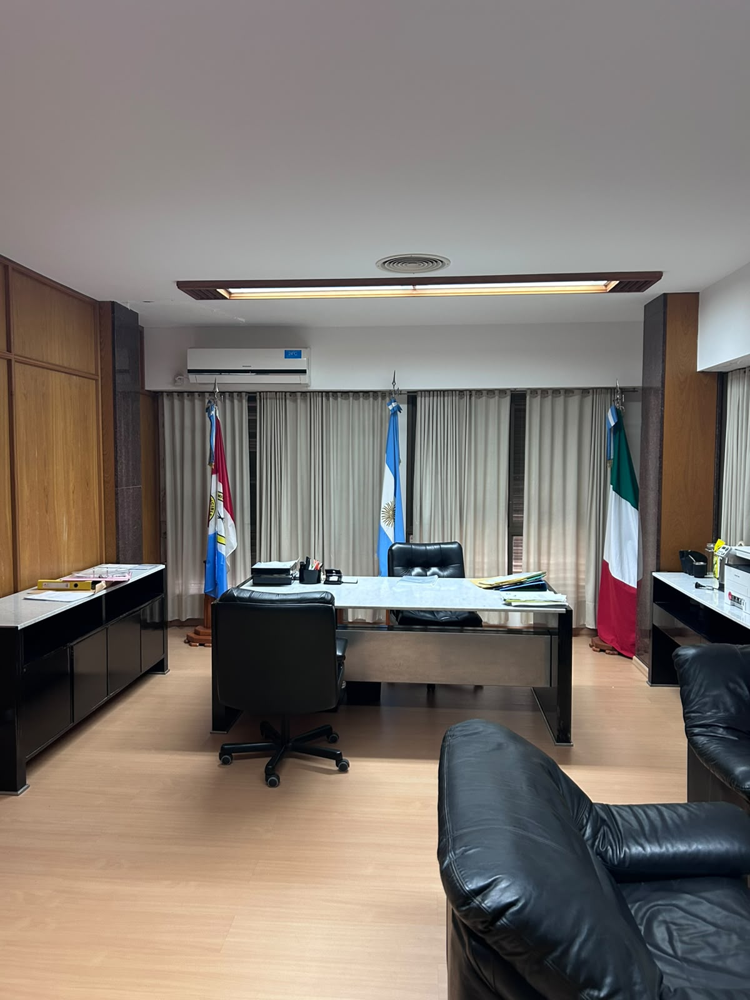
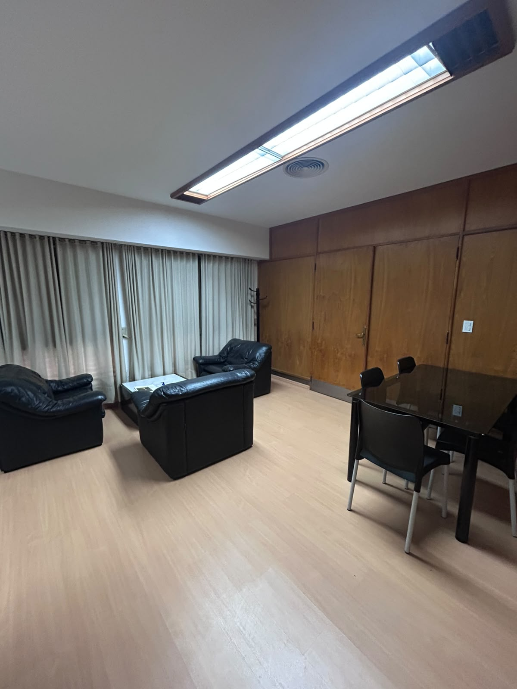
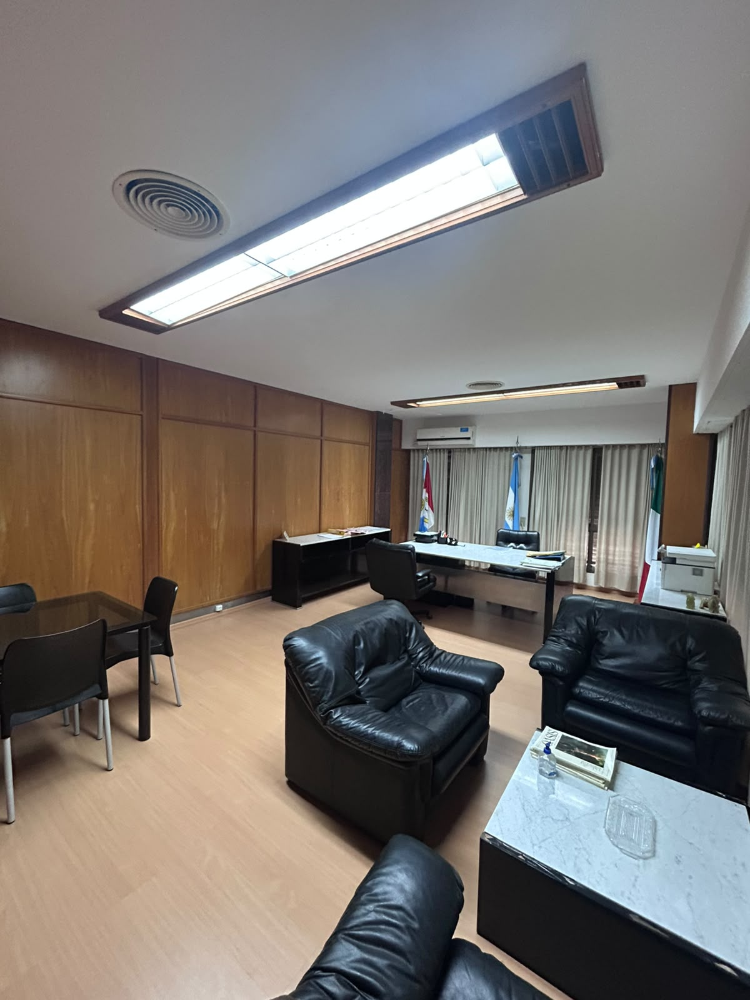

DESARROLLO • FINANCIAMIENTO • CRECIMIENTO
Impulsando el crecimiento de Emprendedores, Empresas, Municipios y Comunas del Departamento San Martín.
Somos una asociación civil con integración público-privada que busca fortalecer el crecimiento y el desarrollo de quienes la integran, acompañando a emprendedores, monotributistas, Pymes, empresas, Municipios y Comunas mediante herramientas de financiamiento y desarrollo sostenible.
Presidente
Juan Pablo Pellegrino
Tesorero
Ariel Martini
Secretaria
Natalia Sánchez
Maximiliano Valdez
Administración General.
Coordinación administrativa, gestión institucional, programas de financiamiento, seguimiento de proyectos y articulación con organismos públicos, entidades financieras, municipios y comunas.
Marcos Magnago
Coordinación Técnica.
Asesoramiento a emprendedores y empresas, formulación y evaluación de proyectos, gestión de líneas de financiamiento y acompañamiento técnico.
Promover y fortalecer el desarrollo socioeconómico, productivo y sostenible del Departamento San Martín, articulando acciones entre el sector público, privado y la sociedad civil mediante herramientas de financiamiento, asistencia técnica y capacitación.
Ser la institución de referencia para el desarrollo departamental, impulsando un ecosistema productivo innovador, integrado y generador de oportunidades para emprendedores, empresas, municipios y comunas.
La Asociación para el Desarrollo Departamental brinda herramientas para impulsar el desarrollo productivo, fortalecer a emprendedores, empresas, municipios y comunas, y promover la articulación entre el sector público y privado.
Acompañamos a empresas y emprendedores mediante diagnósticos, formulación de proyectos, acceso a programas y asesoramiento para potenciar su desarrollo.
Promovemos capacitaciones, formación profesional y desarrollo de habilidades para fortalecer el crecimiento del sector productivo.
Trabajamos junto a Municipios y Comunas impulsando proyectos estratégicos para el desarrollo regional.
Gestionamos líneas de crédito propias y articuladas con organismos provinciales y nacionales para impulsar proyectos productivos.
Generamos acuerdos y beneficios que fortalecen la competitividad de empresas, emprendedores y comercios de la región.
Trabajamos para acompañar el crecimiento de emprendedores, empresas, municipios y comunas, brindando herramientas concretas para impulsar el desarrollo del Departamento San Martín.
Cada proyecto es analizado de forma individual, brindando acompañamiento durante todo el proceso.
Contamos con experiencia en gestión de programas de financiamiento y desarrollo productivo.
Impulsamos iniciativas que fortalecen el crecimiento económico y social del Departamento San Martín.
Nuestra sede administrativa está ubicada en J. F. Seguí 960, El Trébol, donde brindamos atención, asesoramiento y acompañamiento a emprendedores, empresas, municipios y comunas del Departamento San Martín.



Financiamiento destinado a emprendedores para impulsar nuevos proyectos, fortalecer emprendimientos existentes y promover el desarrollo local.
Solicitar financiamientoLínea de financiamiento con tasa bonificada para monotributistas, pequeñas y medianas empresas, destinada a potenciar la inversión y el crecimiento productivo.
Solicitar financiamientoNueva línea de financiamiento impulsada por la Asociación para el Desarrollo Departamental para acompañar proyectos productivos y emprendimientos del territorio.
Solicitar financiamientoAcompañamos a personas, emprendedores y empresas en la gestión de líneas de crédito ofrecidas por entidades financieras y organismos públicos. Analizamos tu proyecto y te acompañamos durante todo el proceso.
Conocer líneas disponibles📍 J. F. Seguí 960 - El Trébol, Santa Fe
📲 WhatsApp: 3401-433139
📧 asociacionparaeldesarrollosm@gmail.com
📷 Instagram: @add.dptosanmartin